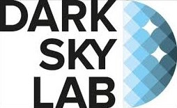
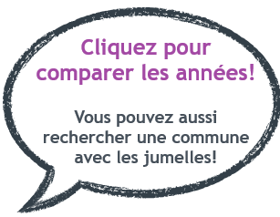
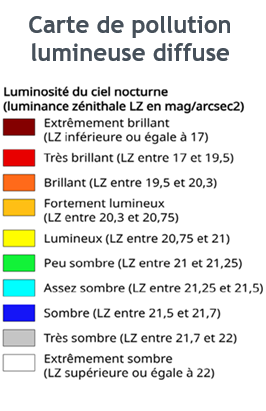
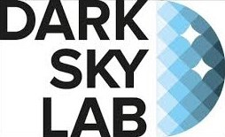
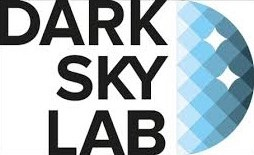
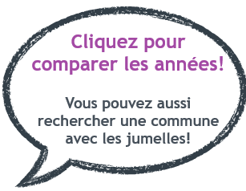
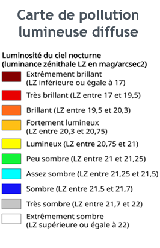
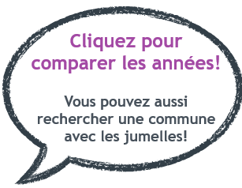
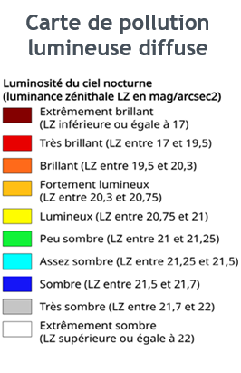

Luminosité du ciel nocturne
Luminosité en coeur de nuit en 2021
Luminosité en coeur de nuit en 2022
Luminosité en coeur de nuit en 2023
Luminosité en extrémité de nuit en 2022
Impact des points lumineux sur la biodiversité

 

 


 


